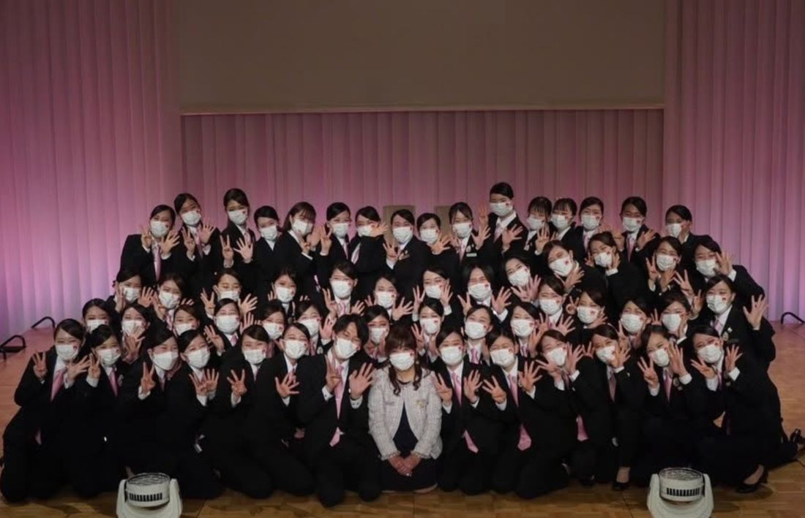
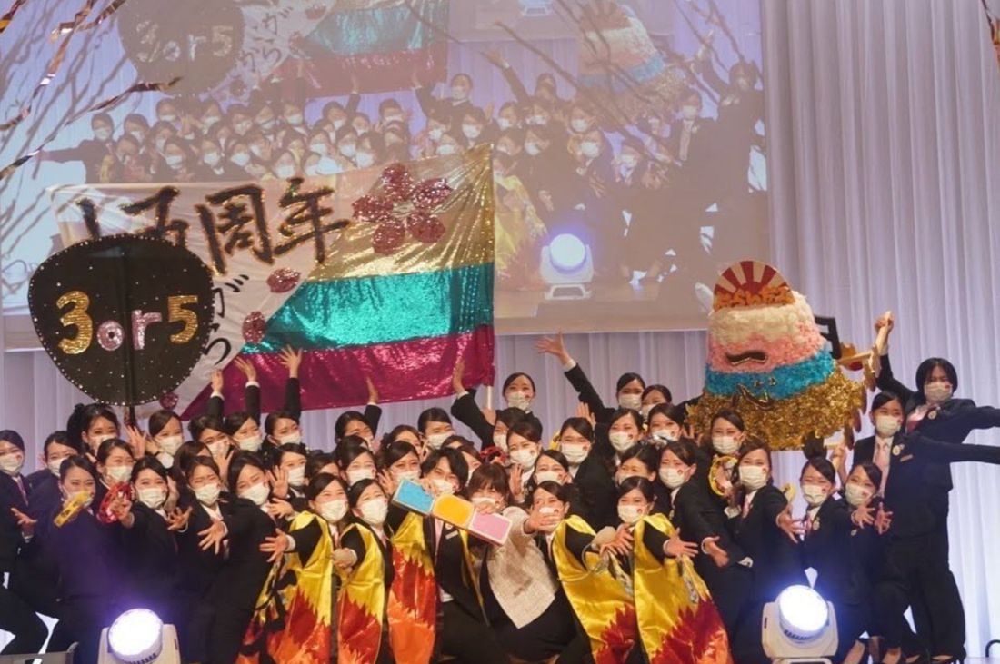

名古屋外語・ホテル・ブライダル専門学校の卒業制作にお招きいただき、協議会を代表して、副代表の吹原が参加してまいりました。


会場には、会員企業様も多数参加されていました。コロナ禍での開催にあたっては、準備も大変だったことと思います。制約の多い状況のなかで、この日を迎えるまでには、学生の皆さんにも、先生方にも、数えきれない苦労があったはずです。
それでも当日、私たちが受け取ったのは、学生のパワーと熱い想いでした。
卒業制作は、学びの集大成です。これまで積み重ねてきたものすべてを注ぎ込んだ発表からは、一人ひとりの「やりきった」という充実感と、これから現場へ飛び込んでいく決意が伝わってきました。まもなく社会へ羽ばたく彼らの姿は、頼もしく、まぶしいものでした。
素敵な機会にお招きいただき、ありがとうございます。ウェディング業界の未来が必ず明るいものになるよう、みなさまと力を合わせて進んでいきたいです。
今日巣立っていく学生さんたちが、数年後、それぞれの現場で輝いている——そんな未来を思い描きながら、私たちも受け入れる側として、より良い業界をつくる努力を続けてまいります。ご卒業を迎えるみなさま、本当におめでとうございます。
愛知ウェディング協議会 カレッジ部会では、学校との連携・学生の参画を通じて、業界の未来を担う人材とともに歩んでいく取り組みを進めています。